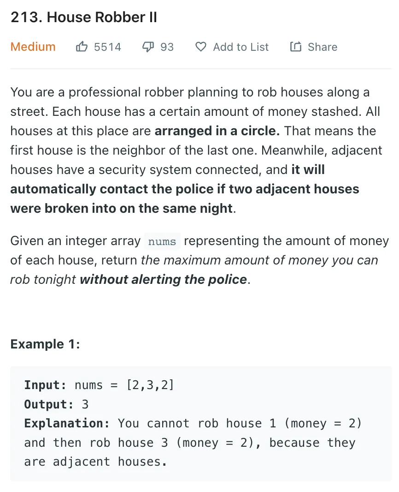
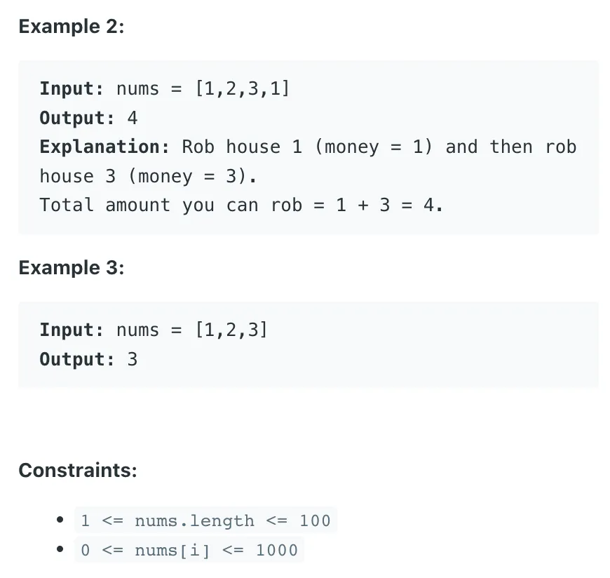

213. House Robber II
考過的公司：Asked by: Amazon, Google, tiktok
Question


✍🏽 My Solution
Runtime: 1 ms, faster than 28.98% of Java online submissions for House Robber II.
Memory Usage: 41.4 MB, less than 58.14% of Java online submissions for House Robber II.
class Solution {
public int rob(int[] nums) {
int n = nums.length;
if (n == 1) return nums[0];
if (n == 2) return Math.max(nums[0], nums[1]);
int max1 = rob(nums, 0, n-2); // 第0个偷窃，偷窃0~n-2之间的房子
int max2 = rob(nums, 1, n-1);// 第0个不偷窃，偷窃1~n-1之间的房子
return Math.max(max1, max2);
}
private int rob(int[] nums, int begin, int end) {
int n = nums.length;
int[] dp = new int[n];
if (begin == 0) {
dp[0] = nums[begin];
dp[1] = Math.max(nums[begin], nums[begin+1]);
} else {
dp[0] = 0;
dp[1] = nums[begin];
}
for (int i = 2; i <= end; i++) {
dp[i] = Math.max(dp[i-1], dp[i-2] + nums[i]);
}
return dp[end];
}
}
🧠 Thought Process
- Why did I choose this particular implementation?
- 有參考王爭的寫法～但是思路是自己想出來的
- 跟House Robber思路差不多，先分成偷1間房子跟不偷第一間房子，再比較這兩個誰大
- What is the time/space complexity of my solution? How do I know?
- time: O(n)
- space: O(n)